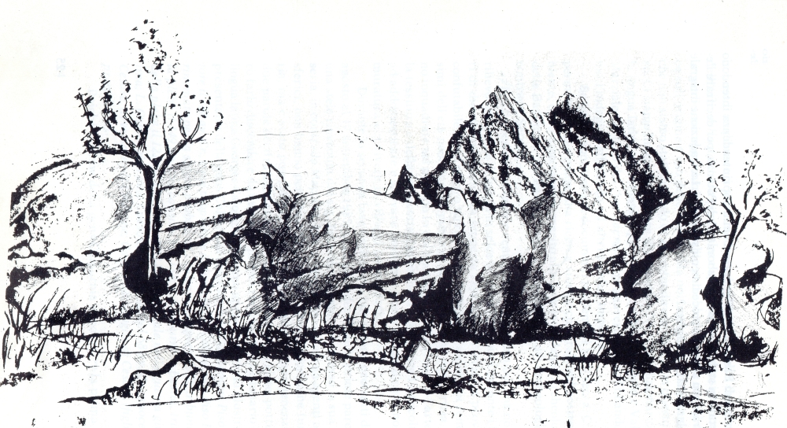

Le Origini

A causa della mancanza di documenti, le origini di Albano di Lucania sono incerte.
Diverse sono le ipotesi sul suo nome, le più suggestive indicano la sua origine da un condottiero romano,
albanese o greco, o da una principessa di nome Alba.
Tuttavia, le ipotesi più attendibili lasciano supporre che il nome Albano derivi da una famiglia gentilizia romana.
Gli studi della toponomastica svolti da Flechia e confermati da Racioppi ci dicono che i nomi che terminano in “ano”
ed “ana”, molto frequenti in Italia Meridionale, indicano proprietà o possesso da parte di una famiglia gentilizia.
Albano, dunque, potrebbe essere stato posseduto dalla nobile famiglia romana Albius da cui sarebbe derivato il nome
(Albius-Albianum-Albanum-Albano).
Non si può neanche escludere che il nome Albano derivi dalla radice indoeuropea “alb-" che vuol dire monte” come accade per
le “Alpi” e per i “Colli Albani”.
Diversi sono gli elementi che lasciano dedurre che il territorio di Albano di Lucania sia
stato abitato sin da tempi remotimura antichissime costruite con massi enormi.
Secondo alcune testimonianze orali, queste mura sarebbero state distrutte dai moderni mezzi di
scavo durante i lavori di ammodernamento del centro abitato.
Anche i segni lasciati dall'uomo sulla roccia lasciano supporre la sua presenza antichissima sul territorio di Albano.